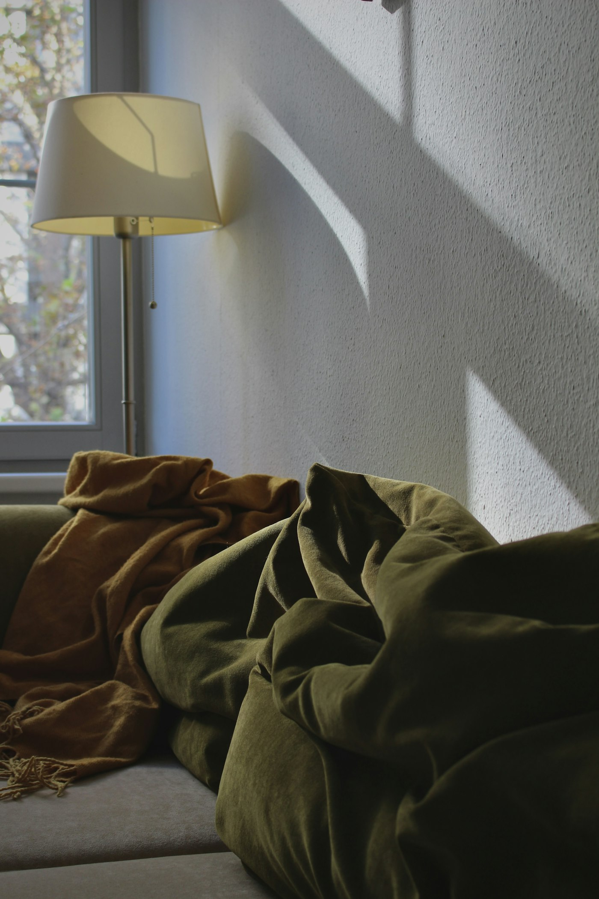
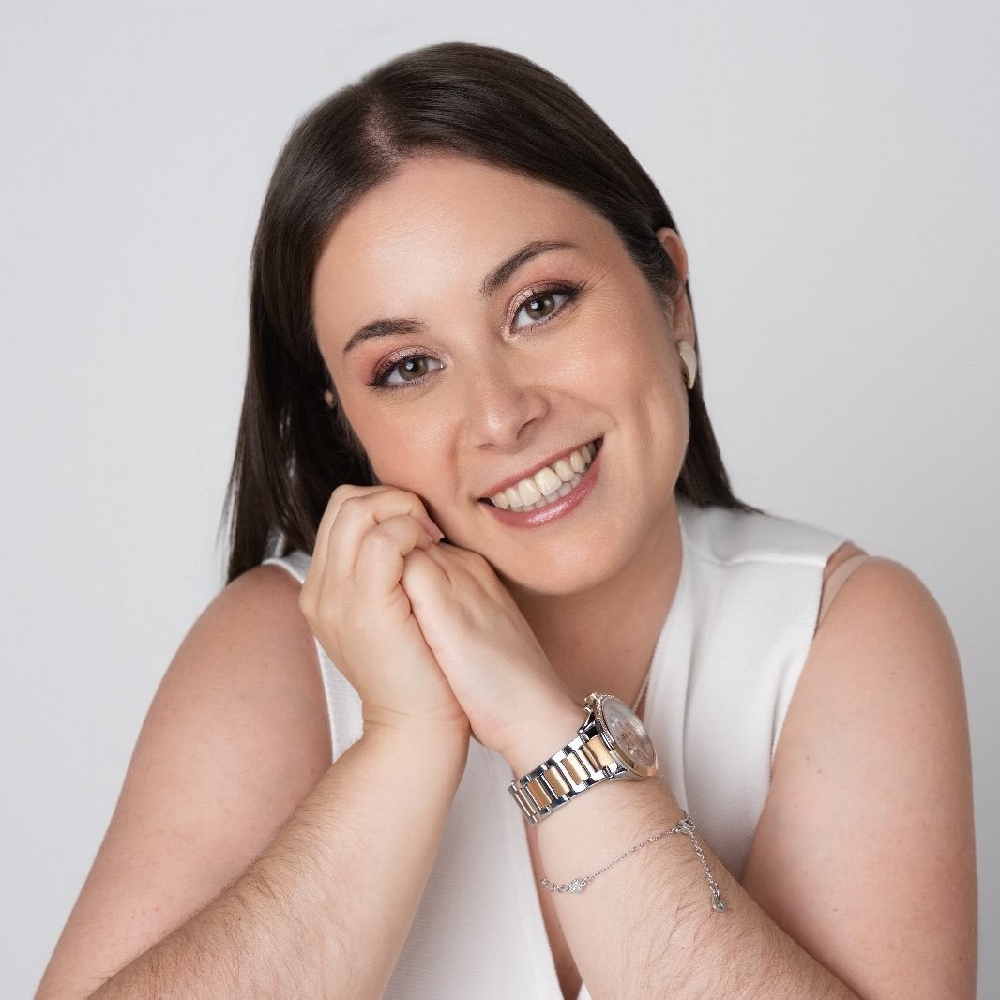
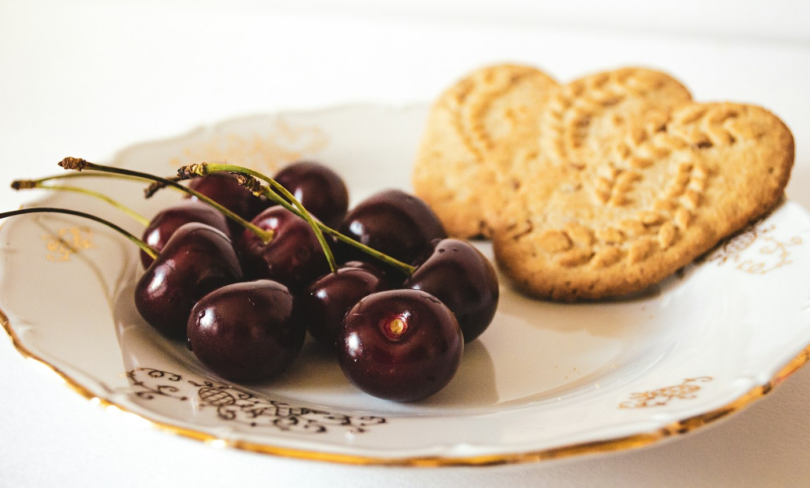
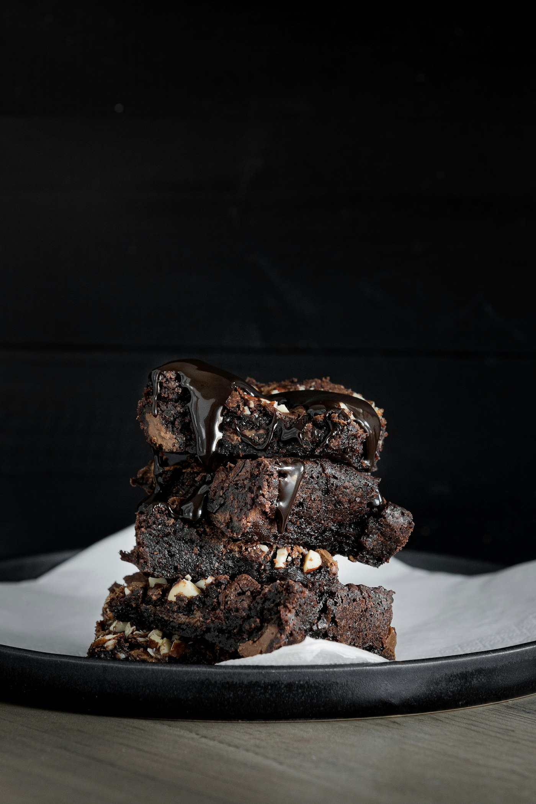

Um espaço só teu, a partir de casa.
Ansiedade, comportamento alimentar, culpa e autoestima. Duração, frequência e valor: a confirmar com a cliente
Sou a Eduarda. Ajudo-te a perceber o que a ansiedade e a comida estão a tentar dizer, para que comer deixe de ser um campo de batalha. Online, onde quer que estejas.
A espalhar a saúde mental por + de 10 países

Podem parecer disciplina, mas alimentam a fome emocional. Comer às escondidas, prometer recomeçar na segunda, sentir culpa antes do último garfo. Isto não é falta de carácter. É a forma que aprendeste de te acalmares quando o dia pesa demais. E dá para aprender outra.
(sim, isto também conta)
A fome emocional raramente é um episódio isolado. Costuma ser um ciclo: quanto mais controlo, mais tensão; quanto mais tensão, mais perdes o controlo. Toca nas etapas, ou vê onde a pausa pode entrar.
Regras rígidas, “hoje vou portar-me bem”. Parece força, mas é tensão a acumular.
Três perguntas para ouvires melhor o que o teu corpo (e a tua cabeça) estão a pedir. Não é um teste nem um diagnóstico: é um momento para parar antes de decidir.

1 O que sentiste nas últimas horas?
2 Onde sentes a fome?
3 Como começou?
Escolhe o que sentes, move o cursor e diz-me como a fome começou. A leitura aparece aqui.
Reflexão rápida, ilustrativa. Não é um diagnóstico nem substitui o acompanhamento por um/a psicólogo/a.
Conversa individual, curso ou webinar: escolhe o formato que te cabe no momento. Todos online.

Ansiedade, comportamento alimentar, culpa e autoestima. Duração, frequência e valor: a confirmar com a cliente
O curso da Eduarda. Programa, formato, duração e valor: a confirmar com a cliente
Como reconhecer e quebrar o ciclo da fome emocional, da culpa e da baixa autoestima.
A conversa chega onde tu estás. A Eduarda fala de saúde mental a mais de dez países, por isso o fuso horário conta: escolhe onde estás e vê que horas são quando, em Lisboa, é a hora de uma sessão de exemplo.
Acompanho pessoas que se sentem presas entre a ansiedade e a comida: quem se controla o dia todo e se perde à noite, quem se culpa depois de comer, quem já não sabe distinguir fome de emoção.
Acredito que comer não é o problema, é muitas vezes a resposta. E que se pode aprender uma resposta mais gentil, ao teu ritmo e sem julgamentos.
Cuida da tua mente, onde quer que estejas.
Respostas ilustrativas: ficam por validar com a Eduarda antes do site final.
Encontramo-nos por videochamada, de um sítio onde te sintas à vontade. Plataforma, duração e valores ficam por confirmar com a Eduarda.
Todos comemos por prazer ou por conforto às vezes, e isso é normal. Vale a pena olhar com mais atenção quando acontece muitas vezes, vem acompanhado de culpa ou parece fora do teu controlo. Uma conversa ajuda a perceber.
A psicologia não prescreve dietas. Trabalha a tua relação com a comida, as emoções e os pensamentos à volta dela. Quando for útil, pode articular-se com outros profissionais de saúde.
A conversa é online, por isso o essencial é teres internet e um espaço tranquilo. Horários e condições para quem vive fora de Portugal ficam por confirmar.
Começa por uma conversa. Não precisas de chegar com tudo organizado nem com “um problema grande”: podes começar pelo que sentes hoje.
Escreve-me com calma. Não tens de ter as palavras certas: a primeira conversa serve para nos conhecermos.